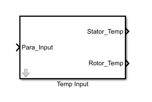

Temperature of Stator and Rotor will vary depending on the corresponding parameter change in Resistance and Flux.
Hence this Temp_Input block is always accompanied with Parameter Value block as shown in above figure.
Para_Input which is input to the block, has the parameter input signal. This signal will interns calculate corresponding temperature.
Depending on the selection of test that is either carried by varying resistance or flux, output of Stator temp and Rotor temperature will change.
This test is carried for testing performance of sBPM motor, by varying parameter and thus varies corrosponding temperature of stator and rotor.
If user wants to conduct test by varying resistance. In this case,stator output will have varying signal and Rotor output will have constant reference temperature as defined.
This test is supported by two .m files, one for parameter initialization 'Parameter_Initialization.m' and other one to run the script 'Automatic_script_Temp.m'.
Test named 'Harness_Vary_Temp.slx' and can be found in the 'Sim_Arch\Harness' folder.